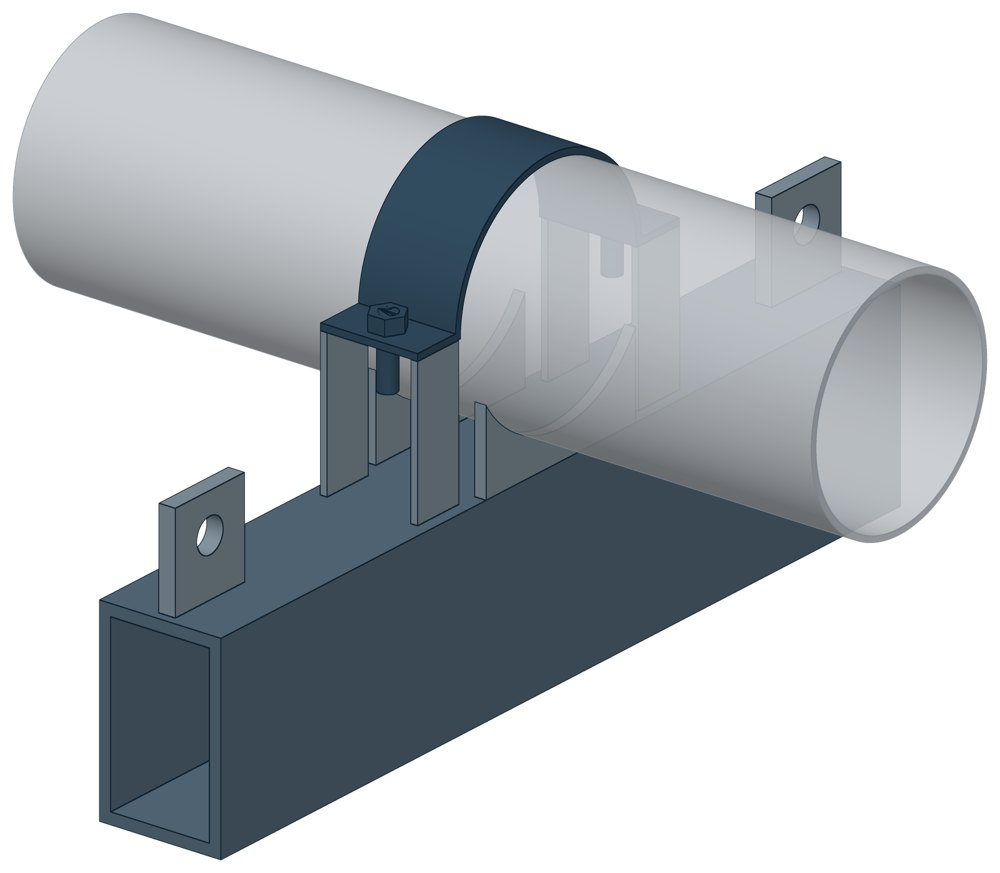

Хомутовые блоки с опорной балкой для подвески ОСТ 108.275.54-80
ОСТ 108.275.54-80. Dн 159–194 мм, допускаемая нагрузка — до 17,6 кН, масса 25,4–33,4 кг.

- Диаметр трубы Dн
- 159–194 мм
- Документ
- ОСТ 108.275.54-80
- Исполнений
- 4
- Масса
- 25,4–33,4 кг
- 3D-модели
- у всех исполнений (условные: общий вид по габаритам)
Таблица исполнений ОСТ 108.275.54-80
| Обозначение | Код ПРОМБУРГ | Dнмм | Допускаемая нагрузкакН (кгс) | ТоС | Длина хомутамм | Ширинамм | Высота блокамм | Массакг | 3D |
|---|---|---|---|---|---|---|---|---|---|
| 01 ОСТ 108.275.54-80 | ПБ-10854-0159-1 | 159 | 12,80 (1300) | 545 | 670 | 85 | 313 | 25,4 | 3D |
| 03 ОСТ 108.275.54-80 | ПБ-10854-0194-1 | 194 | 17,60 (1800) | 545 | 750 | 105 | 384 | 31,9 | 3D |
| Обозначение | Код ПРОМБУРГ | Допускаемая нагрузкакН (кгс) | Наружный Днмм | ТоС | Длина хомутамм | Ширинамм | Высота блокамм | Массакг | 3D |
|---|---|---|---|---|---|---|---|---|---|
| 02 ОСТ 108.275.54-80 | ПБ-10854-0159-2 | 12.80 (1300) | 159 | 440 | 670 | 85 | 313 | 25,4 | 3D |
| 04 ОСТ 108.275.54-80 | ПБ-10854-0194-2 | 17.60 (1800) | 194 | 280 | 750 | 105 | 384 | 33,4 | 3D |
Чтобы заказать, сообщите обозначение и код ПРОМБУРГ: +7 (499) 325-51-35, promburg@yandex.ru.
Нормативные документы
- ОСТ 108.275.54-80 Блоки хомутовые с опорной балкой для подвесок трубопроводов ТЭС и АЭС. Конструкция и размеры — документ, по которому изготавливается изделие — Отменён, срок действия окончен 01.01.1992. Изделие изготавливается по прежнему обозначению.
Связанные позиции
- Соседний тип: ОСТ 108.275.55-80 — Хомутовые блоки с опорной балкой
На трубу Dн 159–194 мм в каталоге
Позиции каталога с исполнениями на те же наружные диаметры трубы.
Детали трубопровода
- Заглушка стальная эллиптическая общих Dн: 1
- Отвод стальной крутоизогнутый 90°, 09Г2С общих Dн: 1
- Отвод стальной крутоизогнутый 90° общих Dн: 1
- Переход стальной концентрический общих Dн: 1
- Фланец стальной воротниковый общих Dн: 1
- Фланец стальной плоский приварной общих Dн: 1
Компенсаторы
- Компенсатор сильфонный 2ОПКР общих Dн: 1
- Компенсатор сильфонный 2ОПКР (ИЯНШ) 2ОПКРИ общих Dн: 1
- Компенсатор сильфонный 2СКУ.М 2СКУМ общих Dн: 1
- Компенсатор сильфонный 2СКУ.М (ИЯНШ) 2СКУМИ общих Dн: 1
- Компенсатор сильфонный 2СКУ.ППМ 2СКУППМ общих Dн: 1
- Компенсатор сильфонный 2СКУ.ППМ (ИЯНШ) 2СКУППМИ общих Dн: 1
- Компенсатор сильфонный 2СКУ.ППУ 2СКУППУ общих Dн: 1
- Компенсатор сильфонный 2СКУ.ППУ (ИЯНШ) 2СКУППУИ общих Dн: 1
- Компенсатор сильфонный 2СКУ.ППУ/ОЦ (ИЯНШ) 2СКУППУОЦИ общих Dн: 1
- Компенсатор сильфонный DEK общих Dн: 1
- Компенсатор сильфонный фланцевый KSOF общих Dн: 1
- Компенсатор сильфонный для систем отопления общих Dн: 1
- Компенсатор сильфонный для отопления с кожухом КОК общих Dн: 1
- Компенсатор сильфонный КС общих Dн: 1
И ещё 20 типов — в оглавлении каталога.
Другие опоры и подвески
- Опора скользящая хомутовая ТС-626 общих Dн: 2
- Опорные плиты диэлектрические ТС-632 общих Dн: 2
- Опоры бескорпусные неподвижные ОБН общих Dн: 2
- Опоры приварные неподвижные скользящие ОПН общих Dн: 2
- Опоры скользящие и неподвижные ОХН общих Dн: 2
- Подвесные опоры ПГ2у, ПМ2у общих Dн: 2
- Подвесные опоры, подвески ПМ2ш, ПГ2ш ПГ2ш, ПМ2ш общих Dн: 2
- Подвески ПГ и ПМ для горизонтальных трубопроводов ПГ, ПМ общих Dн: 2
- Опоры подвесного типа ПГВ, ПМВ общих Dн: 2
- Опоры жесткие подвесные Т23 общих Dн: 2
И ещё 67 типов — в оглавлении каталога.
Другие типы раздела
Опоры и блоки подвесок по ОСТ 108.275.26…60-80
- Двуххомутовые неподвижные опоры ОСТ 108.275.26-80
- Опоры однохомутовые ОСТ 108.275.29-80
- Опоры двуххомутовые скользящего типа ОСТ 108.275.30-80
- Катковые блоки с хомутовыми опорами ОСТ 108.275.45-80
- Блоки хомутовые ОСТ 108.275.52-80
- Хомутовые блоки ОСТ 108.275.53-80
- Хомутовые блоки с опорной балкой ОСТ 108.275.55-80
- Хомутовые блоки для подвесок ОСТ 108.275.56-80
- Хомутовые блоки для подвесок трубопроводов ОСТ 108.275.57-80
- Пружинные блоки ОСТ 108.275.58-80
- Сдвоенные пружинные блоки ОСТ 108.275.59-80
- Опорные пружинные блоки ОСТ 108.275.60-80
Частые вопросы
По какому диаметру подбирать — Dн или Ду?
По наружному диаметру трубы Dн: именно он стоит в таблицах серии. Ду — условный проход, округлённая величина: Ду 100 соответствует Dн 108. В заявке указывайте Dн и толщину стенки трубы.
В старом проекте нагрузка в тс, а здесь в кН. Как сравнить?
Серия 4.903-10 даёт нагрузки в тонна-силах, серия 5.903-13 — в килоньютонах. 1 тс = 9,81 кН, то есть 10 тс — это около 98 кН. В таблицах каталога переключатель единиц пересчитывает значения.
Из какой стали изготавливаются опоры?
По рабочим чертежам серии листовые детали — Ст3сп5 ГОСТ 14637-89, хомуты из круга — сталь 20 ГОСТ 1050-88. Для районов с низкой расчётной температурой воздуха применяется низколегированная сталь, в том числе 09Г2С; размеры опор при этом не меняются. В заявке укажите расчётную температуру наружного воздуха.
Почему часть поверхностей опоры не окрашена?
Поверхности под приварку к трубе и к несущей конструкции оставляют без краски, иначе шов получится некачественным. Их консервируют смазкой, которую снимают перед сваркой.
Что указать в заявке, чтобы получить цену без уточнений?
Обозначение с номером исполнения или код ПБ, количество, Dн и стенку трубы, расчётную температуру наружного воздуха, покрытие, город доставки и желаемый срок. Кнопка «В заявку» в таблице собирает спецификацию, которую можно выгрузить в Excel или отправить письмом.